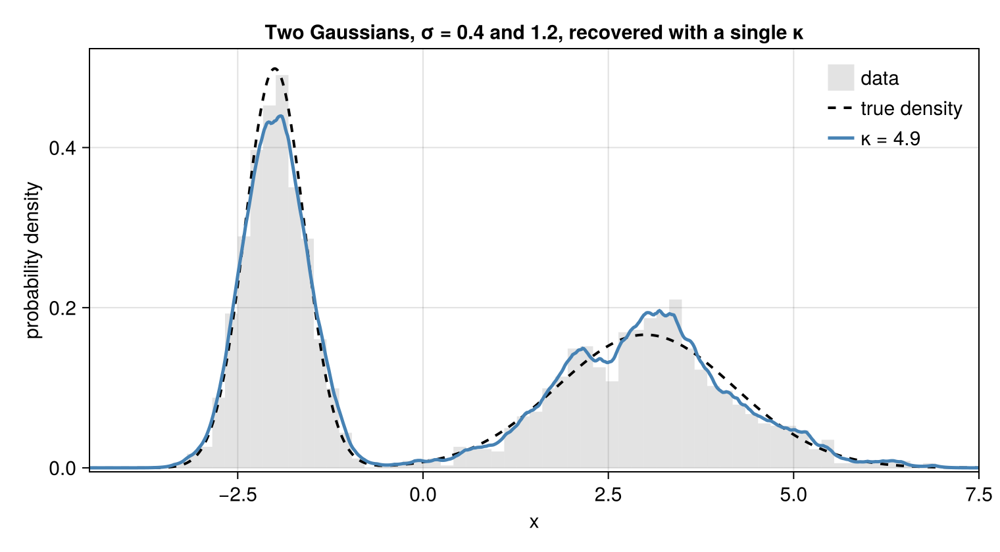
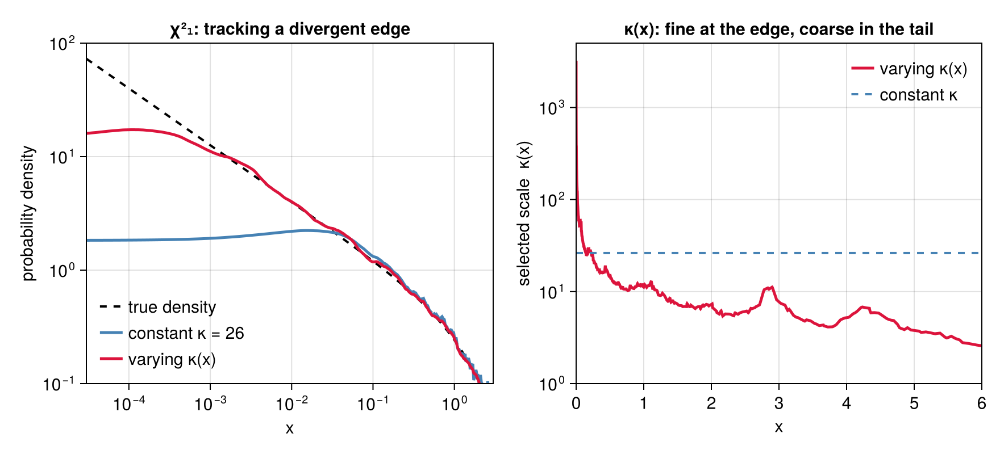
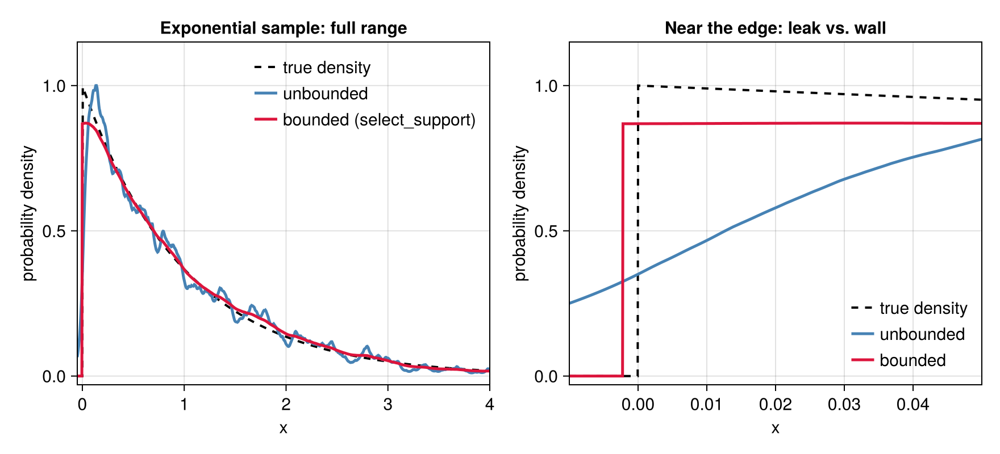

Tutorial
This walkthrough fits a bimodal distribution, chooses the smoothing scale, and tests candidate models against the data.
A worked example
Consider a mixture of two Gaussians with equal weight, a narrow one ($\sigma=0.4$) centered at $x=-2$ and a broad one ($\sigma=1.2$) at $x=3$. First let's draw some samples from this distribution:
using Random
Random.seed!(42)
comps = [(w=0.5, μ=-2.0, σ=0.4), (w=0.5, μ=3.0, σ=1.2)]
truepdf(x) = sum(c.w * exp(-((x - c.μ) / c.σ)^2 / 2) / (c.σ * sqrt(2π)) for c in comps)
N = 2000
xs = [rand() < comps[1].w ? comps[1].μ + comps[1].σ * randn() :
comps[2].μ + comps[2].σ * randn() for _ in 1:N]To construct an estimate of the density from the points xs, we first select a smoothing length scale and then construct the density:
using PenalizedDensity
κ = select_kappa(xs) # recommended scale (KL cross-validation)
d = DensityEstimate(xs, κ) # fit at the recommended scaleκ determines the amount of smoothing: the amplitude of the density estimate will decay over a length scale 1/κ. d is a callable density: d(x) returns the estimated density at a single point x. Let's plot this estimate against the true density:
using CairoMakie # for plotting
g = range(-4.5, 7.5; length = 800)
lines(g, truepdf.(g); linestyle = :dash, label = "true density")
lines!(g, d.(g); label = "κ = $(round(κ, digits=1))")
axislegend()
A single scale resolves both the narrow and the broad component. Note that κ is a resolution scale, not a component width. Its reciprocal $1/\kappa$ is smaller than either component's $\sigma$, so the estimator resolves features of any larger width, which is set by the underlying distribution and the data obtained by sampling from it.
Choosing the smoothing scale
The recommended selector is select_kappa, which minimizes a likelihood (Kullback–Leibler) cross-validation score:
κ_kl = select_kappa(xs) # likelihood cross-validation4.920330605033251Its score is the leave-one-out log-likelihood $-\tfrac1N\sum_i \ln \hat Q_{-i}(x_i)$, where $\hat Q_{-i}(x_i)$ is an estimate at the point $x_i$ formed from all points except $x_i$ itself. This score is an estimate of $\mathrm{KL}(Q \,\|\, \hat Q_\kappa)$ up to a constant; it is the criterion native to the estimator, whose action is itself a log-likelihood. It is evaluated analytically: each leave-one-out density comes from a one-step expansion of the fit, so no point-by-point refitting is needed. The selected scale grows like $N^{1/5}$.
The score assumes a continuous underlying density, in which no two observations coincide. If more than 1% of the observations repeat another value, select_kappa throws an ArgumentError unless you say what the repeats mean with the resolution keyword. For values rounded to a lattice of spacing δ, select_kappa(x; resolution = δ) selects the scale for IntervalDensityEstimate(x, κ; resolution = δ), treating each observation as its rounding interval. resolution = 0 declares the repeats to be exact points; each held-out term then leaves out every observation at the held-out value (holdout = :location), so the score does not reward spikes at the repeated values.
Comparing selection criteria
select_kappa is the package's selection criterion. The alternatives below are public but not exported. They exist so you can compare criteria on your own data. Each comes as a selector and, where it minimizes a score, as a function that evaluates that score at a given $\kappa$:
| criterion | selector | score at κ |
|---|---|---|
| likelihood cross-validation (KLCV) | select_kappa | klcv |
| least-squares cross-validation (LSCV) | select_kappa_lscv | lscv |
| minimum sensitivity | select_kappa_sensitivity | action_sensitivity |
Evaluating a score over a range of $\kappa$ shows how sharply its minimum is defined:
using PenalizedDensity: klcv, lscv, action_sensitivity, select_kappa_lscv, select_kappa_sensitivity
κs = exp.(range(log(0.5), log(50); length = 41))
scores = [klcv(xs, κ) for κ in κs]
κs[argmin(scores)], κ_kl # best grid point and the selected scale(4.999999999999999, 4.920330605033251)Least-squares cross-validation minimizes an unbiased estimate, up to a constant, of the integrated squared error $\int(\hat Q_\kappa - Q)^2$, i.e. it targets minimum mean integrated squared error (MISE):
κ_lscv = select_kappa_lscv(xs)5.499913152186472To leading order it selects the same $\kappa \propto N^{1/5}$ as select_kappa. Across a range of test densities select_kappa tracks the error-optimal scale more closely (see benchmarks/), and it is cheaper, because it needs no $\int \hat Q^2$ term. LSCV has no interval form, so rounded data should go to select_kappa with resolution.
select_kappa_sensitivity resolves information in the data rather than minimizing error. It returns the point of minimum sensitivity, where action_sensitivity $= |dS/d\ln\kappa|$ is smallest. The derivative is computed analytically, so the result is free of the noise that finite-differencing the action curve would introduce.
κ_ms = select_kappa_sensitivity(xs)11.859871515647109On smooth densities minimum sensitivity over-resolves: its scale grows faster with $N$ than the error-optimal $N^{1/5}$, which is why select_kappa is the default. It takes no support, because the entropy asymptotics it relies on are derived for the unbounded line.
Letting the scale vary across the data
Every selector above returns one $\kappa$ for the whole line, and a single scale has to compromise: fine enough to resolve the peaks, coarse enough to stay quiet in the tails. On a smooth density that compromise costs little. But when the density is irregular — a divergent or discontinuous edge, a kink, a heavy tail — a constant $\kappa$ is limited not by noise but by the density's own shape, and no choice of it is good everywhere.
select_kappa(x, Adaptive()) lifts the compromise by letting the scale vary with $x$: $\kappa(x)$ large where the data resolve fine detail, small where they do not.
As an example, take a $\chi^2_1$ sample, whose density diverges as $x^{-1/2}$ at the origin:
using PenalizedDensity, Random, Statistics
Random.seed!(7)
z = randn(4000) .^ 2 # χ²₁: the density diverges at x = 0
κ_const = select_kappa(z) # one scale everywhere
κ_var = select_kappa(z, Adaptive()) # a scale that varies with xWindowScale(c=21.340785548106982, γ=0.75) on a grid of 399 pointsThe adaptive selector returns a callable $\kappa(x)$ — here a WindowScale, explained below — which DensityEstimate takes exactly where a number would go:
d_const = DensityEstimate(z, κ_const)
d_var = DensityEstimate(z, κ_var)DensityEstimate with 3998 distinct nodes, 4000.0 total weight, κ ∈ [1.1650481389838376, 3252.1255562090832], λ=3952.9778204027016Below, the left panel shows true underlying density (dashed) and the two estimates d_const and d_var; the right panel shows how κ_const and κ_var depend on position.

The estimate with constant κ departs from the power law below $x \approx 3\times 10^{-2}$; the adaptive one tracks it to about hundredfold-smaller x (typically, fewer than one hundred points land within [0, 1e-3]). The payoff is measurable on held-out data — the mean log-likelihood of a fresh sample, whose gap is the reduction in KL divergence, in nats per sample:
ztest = randn(4000) .^ 2
loglik(d) = mean(log.(d.(ztest)))
(constant = round(loglik(d_const); digits = 3),
varying = round(loglik(d_var); digits = 3),
gain = round(loglik(d_var) - loglik(d_const); digits = 3))(constant = -0.938, varying = -0.819, gain = 0.119)Concretely, how is $\kappa(x)$ determined? Two families of scales compete with the constant one, all on the same leave-one-out KL score that select_kappa minimizes, generalized to a varying scale and still evaluated in closed form and in $O(N)$.
The first is a plug-in of the variable-bandwidth kind; Abramson's square-root law, Ann. Statist. 10, 1217 (1982), is the $\alpha = 1/2$ member. A pilot fit $\hat p$ at the constant scale supplies the shape, and the scale is drawn from the family $\kappa(x) = c\,(\hat p(x)/\bar g)^{\alpha}$ ($\bar g$ the geometric mean of $\hat p$ over the sample), an AdaptiveScale; both $c$ and the exponent $\alpha$ are chosen by the score. This family can only refine the scale where the density is high.
The second, the window rule, asks instead how far one can look around $x$ before the sample shows structure: $\hat h(x)$ is the smallest half-width at which the points in $[x - \hat h, x + \hat h]$ show a slope or a curvature (their first or second moment departs from that of a uniform spread by a set number of standard deviations), and $\kappa(x) = c\,(1/\hat h(x))^{\gamma}$ with $\gamma$ fixed and $c$ chosen by the score. It refines the scale wherever the density changes on a short length scale, whatever its height — at a divergent edge, as here, but also at a narrow bump beside a broad mode, where the power family has nothing to work with:
rng = Xoshiro(7)
xb = [rand(rng) < 0.8 ? randn(rng) : 3 + 0.15randn(rng) for _ in 1:2000] # a narrow bump at 3
κb = select_kappa(xb, Adaptive())
round(κb(3.0) / κb(0.0); digits = 1) # finer at the bump than at the broad mode3.2Because the window shape is estimated from the same sample the score holds points out of, the score rates the window candidate slightly too well; it is charged a penalty for that (see WindowRule) before it is compared with the power family's choice.
The constant scale competes in the same comparison — it's the $\alpha = 0$ member of the power family — and when it scores best the selector returns a plain number rather than a callable, keeping the fast path and the goodness-of-fit machinery. window = nothing leaves the window rule out; the power family then must beat the constant scale by more than one standard error of the gain in score (the keyword nse sets the multiple). On uniform data, where $\kappa \propto \hat p^\alpha$ has no contrast to exploit, that returns the constant:
select_kappa(rand(2000), Adaptive(; window=nothing)) isa Real # nothing to buytrueFitting a hard edge
A varying scale sharpens resolution near a feature, but it still fits an amplitude built from exponential tails, which extend over all of $\mathbb{R}$. When the true density has a genuine edge — zero on one side, nonzero on the other — no choice of $\kappa(x)$ reproduces that exactly: the fit always leaks a sliver of mass across the line. DensityEstimate's support keyword fixes this directly, by imposing a natural (Neumann) boundary condition at a finite endpoint rather than approximating it with decay; select_support chooses that endpoint from the data, the same way the other selectors choose $\kappa$.
As an example, take a sample from the standard exponential distribution, whose density jumps from 0 to 1 at $x=0$:
using PenalizedDensity, Random, Statistics
Random.seed!(11)
N = 1500
x = -log.(1 .- rand(N)) # exponential(1): a jump edge at x = 0
κ_const = select_kappa(x)
d_unbounded = DensityEstimate(x, κ_const)
(κ = round(κ_const; digits=1), leaked_mass = round(cdf(d_unbounded, 0.0); digits=4))(κ = 7.1, leaked_mass = 0.0258)leaked_mass is cdf(d_unbounded, 0.0), the fitted probability of landing on the wrong side of the true edge: about one percent of the fit's mass sits below x = 0, where the true density is exactly zero. select_support finds a left wall that removes this directly:
r = select_support(x)
d_bounded = DensityEstimate(x, r.κ; support = r.support)
(wall = round(r.support[1]; digits=5), κ = round(r.κ; digits=2), cdf_at_wall = cdf(d_bounded, r.support[1]))(wall = -0.00221, κ = 2.14, cdf_at_wall = 0.0)cdf_at_wall is exactly 0, not merely small: mass cannot cross a natural boundary. Note also that the selected scale drops to about a fifth of κ_const — the unbounded fit was over-sharpening to fight the leak, and no longer needs to once the wall is doing that job (the search re-optimizes κ at every boundary candidate; see select_support's docstring). The wall itself sits close to the data:
xs = sort(x)
spacing = (xs[10] - xs[1]) / 9 # mean spacing of the 10 points nearest the edge
gap = minimum(x) - r.support[1]
round(gap / spacing; digits=2)5.0which is the search's hard floor: select_support never places a wall closer than five mean edge-spacings to the data, because a boundary any closer reflects the nearest interior points back onto themselves and inflates their leave-one-out likelihood on any sample, edge or not, not only this one. On a genuine hard edge this floor is usually where the search lands, as it does here; a smooth sample has no edge to find in the first place, and the search says so plainly by returning the unbounded candidate:
xg = randn(1500)
rg = select_support(xg)
(support = rg.support, κ_matches_plain_selection = rg.κ === select_kappa(xg))(support = (-Inf, Inf), κ_matches_plain_selection = true)support == (-Inf, Inf) and the returned κ is not merely close to select_kappa(xg) but identical to it — the unbounded candidate always competes, and here it wins outright.
To combine a boundary with a varying scale, pass the chosen support on to select_kappa(x, Adaptive()) so that its own search runs on the bounded domain:
κ_composed = select_kappa(x, Adaptive(); support=r.support)
d_composed = DensityEstimate(x, κ_composed; support = r.support)
(α = κ_composed.α, c = round(κ_composed.c; digits=2))(α = 0.25, c = 3.48)We can test whether this fit is a genuine improvement by generating independent data from the same underlying distribution:
xtest = -log.(1 .- rand(N))
loglik(d) = mean(log.(d.(xtest)))
(unbounded = round(loglik(d_unbounded); digits=3),
bounded = round(loglik(d_bounded); digits=3),
bounded_and_adaptive = round(loglik(d_composed); digits=3))(unbounded = -1.079, bounded = -1.027, bounded_and_adaptive = -1.022)The wall accounts for essentially all of the gain here: once it has absorbed the edge's leak, little irregularity is left in an otherwise-exponential interior, and the two scores agree to within the noise of a fresh N-point sample. The picture below makes the boundary's effect on the fit itself concrete — the unbounded estimate (blue) trailing off below x = 0 where the true density (dashed) is zero, against the bounded estimate (crimson), pinned flat at the wall:

Goodness of fit
Because the estimate is a genuine likelihood fit, you can ask how well a specific model distribution describes the data. Using the fit d from above, chisq is a robust, binning-free $\chi^2$ (the squared Hellinger distance between a trial density and the data):
wrong(x) = exp(-((x - 0.5) / 2.5)^2 / 2) / (2.5 * sqrt(2π)) # a single broad Gaussian
(correct = round(chisq(d, truepdf); digits = 1),
incorrect = round(chisq(d, wrong); digits = 1))(correct = 38.5, incorrect = 2132.0)The true mixture yields a far smaller $\chi^2$ than the mismatched single Gaussian. To judge significance, build the reference distribution of $\chi^2$ for the fit once with ChisqReference; by default it is evaluated as the finite-$N$ generalized chi-squared law. pvalue turns each statistic into a significance under it, and one reference serves any number of trial densities:
ref = ChisqReference(d)
(p_correct = round(pvalue(ref, chisq(d, truepdf)); digits = 3),
p_incorrect = round(pvalue(ref, chisq(d, wrong)); digits = 6))(p_correct = 0.17, p_incorrect = 0.0)The single Gaussian is decisively rejected; the true mixture is not. chisq_pdf and chisq_ccdf give the reference density and upper-tail probability, and mean(ref) its exact mean:
round(mean(ref); digits = 2)33.08The reference law is exact for the Gaussian fluctuation field of the Laplace approximation about the fit, and method = :exact evaluates it at finite $N$, taking no large-$N$ limit. See ChisqReference for context and more information.
The exact law is a per-call integral (Imhof inversion): accurate, but tens of milliseconds apiece. Passing method = :largeN selects instead the closed-form inverse-Gaussian (Wald) shape of the original paper's large-$N$ limit, parameterized by the mean mean(ref); it costs microseconds, so a large batch of trial densities against one fit is far cheaper. Anchored to that mean, it tracks the exact tail closely rather than overstating it:
(exact = round(pvalue(ref, chisq(d, truepdf)); digits = 3),
largeN = round(pvalue(ref, chisq(d, truepdf); method = :largeN); digits = 3))(exact = 0.17, largeN = 0.168)All of this — the exact law and the :largeN shape alike — works unchanged on a fit at a varying scale or a finite support: both are read from the same reference the fit assembles, in the same $O(N)$.
Entropy and negentropy
Because the fit is a smooth density, its information content follows in closed form. entropy is a plug-in estimate of the differential entropy $H(Q) = -\int Q \ln Q$, and negentropy is the entropy deficit relative to the Gaussian of the same mean and variance — a scale-free measure of how non-Gaussian the density is, zero for a Gaussian and positive otherwise:
(H = round(entropy(d); digits = 3), J = round(negentropy(d); digits = 3))(H = 1.747, J = 0.651)The bimodal fit is strongly non-Gaussian, so its negentropy is well above zero. negentropy is invariant to shifting and rescaling the data (with the matching $\kappa \mapsto \kappa/|a|$), so it measures shape alone.
Both quantities also take a second argument of held-out points — data that did not enter the fit — in which case $\ln \hat Q$ is scored there and the Gaussian reference uses the held-out sample's own variance:
xeval = [rand() < comps[1].w ? comps[1].μ + comps[1].σ * randn() :
comps[2].μ + comps[2].σ * randn() for _ in 1:1000]
(H = round(entropy(d, xeval); digits = 3), J = round(negentropy(d, xeval); digits = 3))(H = 1.737, J = 0.667)The held-out negentropy is close to the in-sample value here because the fit generalizes well. Scoring on points that did not build the fit is what makes the held-out form informative: unlike the in-sample value, it is not inflated by concentrating the density onto the fit sample, the same reason select_kappa cross-validates.
The log density itself is logdensity, and it can be used to circumvent density underflows to zero once $2\kappa$ times the distance to the nearest node exceeds about 745. logdensity(d, x) holds throughout that region, where log(d(x)) would give -Inf.
The derivatives of the log density are exposed directly: logdensity_eval_gradient gives $\partial \ln \hat Q(y)/\partial y$ in closed form, and logdensity_node_gradient gives the gradient of a weighted sum of log densities with respect to the node positions, by an implicit-function adjoint that reuses the fit's factored Hessian in a single extra tridiagonal solve. Both are documented in the API reference.